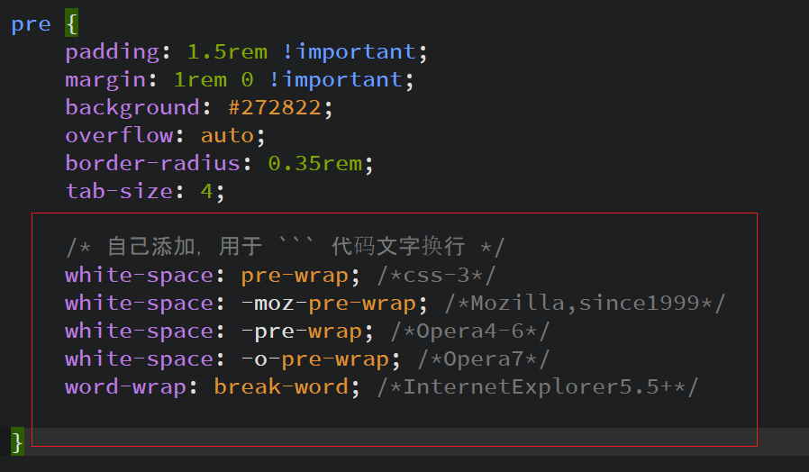
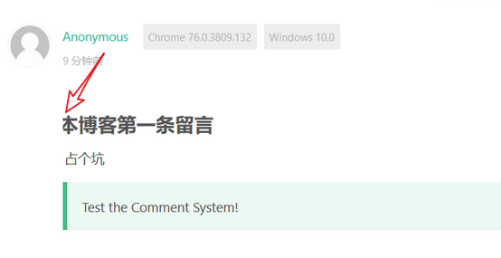

npm安装脚本速度慢
方便一点，我直接更改为阿里的国内镜像
npm config set registry https://registry.npm.taobao.org
npm 使用代理
后面加上
-proxy=http://127.0.0.1:1080
安装 Hexo
npm install -g hexo-cli
连接Github与本地
git config –global user.name “godweiyang”
git config –global user.email “792321264@qq.com“
测试与Github的连接
ssh -T git@github.com
配置文件的更改
为了与github通信，我们修改博客根目录下面的_config.yml
增加如下内容：
deploy:
type: git
repository: git@github.com:user_name/repository_name.git
branch: master
使用第三方主题
我用的是这个主题，有点小bug，不过总体效果还是不错的
文章头设置
首先为了新建文章方便，建议将/scaffolds/post.md修改为如下代码：
---
title: {{ title }}
date: {{ date }}
top: false
cover: false
password:
toc: true
mathjax: true
summary:
tags:
categories:
---
添加动漫人物
安装live2d
npm install --save hexo-helper-live2d
安装模型
npm install live2d-widget-model-shizuku
更多模型请参考
在根目录配置文件中添加如下代码
# Live2D
## https://github.com/EYHN/hexo-helper-live2d
## https://l2dwidget.js.org/docs/class/src/index.js~L2Dwidget.html#instance-method-init
live2d:
enable: true
#enable: false
scriptFrom: local # 默认
pluginRootPath: live2dw/ # 插件在站点上的根目录(相对路径)
pluginJsPath: lib/ # 脚本文件相对与插件根目录路径
pluginModelPath: assets/ # 模型文件相对与插件根目录路径
# scriptFrom: jsdelivr # jsdelivr CDN
# scriptFrom: unpkg # unpkg CDN
# scriptFrom: https://cdn.jsdelivr.net/npm/live2d-widget@3.x/lib/L2Dwidget.min.js # 你的自定义 url
tagMode: false # 标签模式, 是否仅替换 live2d tag标签而非插入到所有页面中
debug: false # 调试, 是否在控制台输出日志
model:
use: live2d-widget-model-hibiki
# use: live2d-widget-model-wanko # npm-module package name
# use: wanko # 博客根目录/live2d_models/ 下的目录名
# use: ./wives/wanko # 相对于博客根目录的路径
# use: https://cdn.jsdelivr.net/npm/live2d-widget-model-wanko@1.0.5/assets/wanko.model.json # 你的自定义 url
display:
position: right
width: 145
height: 315
mobile:
show: true # 是否在移动设备上显示
scale: 0.5 # 移动设备上的缩放
react:
opacityDefault: 0.7
opacityOnHover: 0.8到这里，就完成了
这里有一些扩展的知识，我mark下来备用
https://imjad.cn/archives/lab/add-dynamic-poster-girl-with-live2d-to-your-blog-03
添加网易外链播放
首先复制网易外链播放器生成的HTML代码，然后粘贴到文章里面就行了，你也可以居中一下
<div align="middle">这里粘贴刚刚复制的代码</div>新建标签 tags 页
hexo new page “tags”
编辑/source/tags/index.md，替换里面的内容为
---
title: tags
date: 2018-09-30 18:23:38
type: "tags"
layout: "tags"
---添加搜索功能
npm install hexo-generator-search –save
在 Hexo根目录下_config.yml ，新增如下内容
search:
path: search.xml
field: post中文链接转拼音（可选的）
如果你的文章名称是中文的，那么 Hexo 默认生成的永久链接也会有中文，这样不利于 SEO，且 gitment 评论对中文链接也不支持。我们可以用 hexo-permalink-pinyin Hexo 插件使在生成文章时生成中文拼音的永久链接。
npm i hexo-permalink-pinyin –save
在 Hexo 根目录下的 _config.yml 文件中，新增以下的配置项：
permalink_pinyin:
enable: true
separator: '-' # default: '-'修改页脚
页脚信息可能需要做定制化修改，而且它不便于做成配置信息，所以可能需要你自己去再修改和加工。修改的地方在主题文件的 /layout/_partial/footer.ejs 文件中，包括站点、使用的主题、访问量等。
Front-matter
Front-matter 选项中的所有内容均为非必填的。但我仍然建议至少填写 title 和 date 的值。
修改主题颜色
在主题文件的 /source/css/matery.css 文件中，搜索 .bg-color 来修改背景颜色
修改 banner 图和文章特色图
你可以直接在 /source/medias/banner 文件夹中更换你喜欢的 banner 图片，主题代码中是每天动态切换一张，只需 7 张即可。
在 /source/medias/featureimages 文件夹中默认有 24 张特色图片，你可以再增加或者减少，并需要在 _config.yml 做同步修改。
修改最底下进度条的颜色，大小
找到文件
Blog\themes\hexo-theme-matery\source\css\matery.css
然后找到如下 class 修改

让代码块自动换行
有时使用了代码块引用了一段文字，但是没有换行，导致出现进度条，很难阅读
解决方法；在matery.css的pre标签增加如下内容

修改valine评论bug
如果你用的标题字体，那么会出行如下问题

修改主题文件夹下面的valine.ejs，添加如下内容
div .vcontent{
padding-left: 10px;
}推送到GitHub
安裝一個插件
npm install hexo-deployer-git --save然後 hexo d
手動推送
不幸的是，上述命令虽然简单方便，但是偶尔会有莫名其妙的问题出现，因此，我们也可以追本溯源，使用git命令来完成部署的工作。
克隆GitHub的仓库到本地
将我们之前创建的repo克隆到本地，新建一个目录叫做deploy用于存放克隆的代码。
cd d:/hexo/blog
git clone https://github.com/jiji262/jiji262.github.io.git deploy/
新建一个脚本,注意,此脚本放置在根目录下面
hexo generate
cp -R public/* deploy/
cd deploy/
git add .
git commit -m “update”
git push origin master详情参见:
https://linghucong.js.org/2016/04/15/2016-04-15-hexo-github-pages-blog/
设置Git代理
国内的环境,大家都懂的.有时push发现速度慢的化,不如试试指定代理
设置http代理
git config –global http.proxy http://127.0.0.1:1080
git config –global https.proxy https://127.0.0.1:1080
设置socks5代理
git config –global http.proxy socks5://127.0.0.1:1080
git config –global https.proxy socks5://127.0.0.1:1080
取消代理
git config –global –unset http.proxy
git config –global –unset https.proxy
更多资讯,请参考下方链接
ssh 通过代理连接
ssh -o ProxyCommand=”nc -x 127.0.0.1:1086 %h %p” root@101.121.218.234

更多情况,参考下面链接:
修改后实时更新情况
如果你是在本地测试,浏览器调用的是博客根目录下面的source文件夹(而不是public里面的)当你添加完或者修改一篇文章后,在浏览器可以直接刷新实时查看修改.
对于主题,修改一下css也是可以直接生效的,不需要重启服务.
但是,如果涉及到修改博客根目录下面的_config.yml等文件,就需要重启服务了